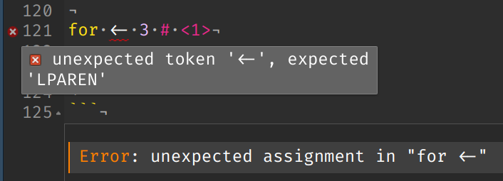

print('Hello world!')
## Hello world!7 Introduction to Programming
7.1 Objectives
- Define programming and provide examples of programming
- Identify reserved words in R and python
- Know how to get help when using R and python
7.2 What is Programming?
Programming today is a race between software engineers striving to build bigger and better idiot-proof programs, and the universe trying to produce bigger and better idiots. So far, the universe is winning. - Rick Cook
Programming is the art of solving a problem by developing a sequence of steps that make up a solution, and then very carefully communicating those steps to the computer. To program, you need to know how to
- break a problem down into smaller, easily solvable problems
- solve the small problems
- communicate the solution to a computer using a programming language
In this book, we’ll be using both R and Python, and we’ll be using these languages to solve problems that are related to working with data. At first, we’ll start with smaller, simpler problems that don’t involve data, but by the end, you will hopefully be able to solve some statistical problems using one or both languages.
It will be hard at first - you have to learn the vocabulary in both languages in order to be able to put commands into logical “sentences”. The problem solving skills are the same for all programming languages, though, and while those are harder to learn, they’ll last you a lifetime.
Just as you wouldn’t expect to learn French or Mandarin fluently after taking a single class, you cannot expect to be fluent in R or python once you’ve worked through this book. Fluency takes years of work and practice, and lots of mistakes along the way. You cannot learn a language (programming or otherwise) if you’re worried about making mistakes.
Take a minute and put those concerns away, take a deep breath, and remember the Magic School Bus Motto:

7.3 Strategies for Programming
As you start to program, you will need to develop some skill at reading and interpreting error messages, breaking problems down into smaller parts, and thinking through what code instructs the computer to do. It’s useful to at least mention some strategies here, though Chapter 15 goes into much more detail.
Google the error message (or put the code and the error into AI and ask it to explain why there is an error).
Make a list of steps or a flowchart illustrating what the code does, breaking the code down into smaller pieces each time.
Keep an eye out for how these strategies are used in Chapter 8 and Chapter 10.
7.4 Programming Vocabulary: Hello World
I particularly like the way that Python for Everybody [1] explains vocabulary (my changes in parentheses):
Unlike human languages, the (R and) Python vocabulary is actually pretty small. We call this “vocabulary” the “reserved words”. These are words that have very special meaning to (R and) Python. When (R) Python sees these words in a (R) Python program, they have one and only one meaning to (R) Python. Later as you write programs you will make up your own words that have meaning to you called variables. You will have great latitude in choosing your names for your variables, but you cannot use any of (R or) Python’s reserved words as a name for a variable.
When we train a dog, we use special words like “sit”, “stay”, and “fetch”. When you talk to a dog and don’t use any of the reserved words, they just look at you with a quizzical look on their face until you say a reserved word. For example, if you say, “I wish more people would walk to improve their overall health”, what most dogs likely hear is, “blah blah blah walk blah blah blah blah.” That is because “walk” is a reserved word in dog language. Many might suggest that the language between humans and cats has no reserved words.
The reserved words in the language where humans talk to Python include the following:
and del global not with
as elif if or yield
assert else import pass
break except in raise
class finally is return
continue for lambda try
def from nonlocal whileThe reserved words in the language where humans talk to R include the following:
if else repeat while
for in next break
TRUE FALSE NULL Inf
NA_integer_ NA_real_ NA_complex_ NA_character_
NaN NA function ...That is it, and unlike a dog, (R) Python is already completely trained. When you say ‘try’, (R) Python will try every time you say it without fail.
We will learn these reserved words and how they are used in good time, but for now we will focus on the (R) Python equivalent of “speak” (in human-to-dog language). The nice thing about telling (R and) Python to speak is that we can even tell it what to say by giving it a message in quotes:
print('Hello world!')
## [1] "Hello world!"The “Hello World” program looks exactly the same in R as it does in python!
And we have even written our first syntactically correct (R and) Python sentence. Our sentence starts with the function print followed by a string of text of our choosing enclosed in single quotes. The strings in the print statements are enclosed in quotes. Single quotes and double quotes do the same thing; most people use single quotes except in cases like this where a single quote (which is also an apostrophe) appears in the string.
In many situations, R and python will be similar because both languages are based on C. R has a more complicated history [2], because it is also similar to Lisp, but both languages are still very similar to C and often run C or C++ code in the background.
Reserved Word Errors
What happens when we try to assign a new value to a reserved word? We’ll learn more about assignment in the next chapter, but for now, know it is equivalent to setting the value of a variable. x = 3 or x <- 3 defines the variable \(x\) as having the value 3.
for <- 3
## Error in parse(text = input): <text>:1:5: unexpected assignment
## 1: for <-
## ^- 1
-
We just tried to assign the value 3 to the word
for.foris a reserved word and cannot have a different value assigned to it, so we get an unexpected assignment error.
When we assign the value of a non-reserved word, things work just fine:
x <- 3- 1
- x is not a reserved word, so we can safely assign x the value 3 without getting any errors.

for = 3
## invalid syntax (<string>, line 1)- 1
-
We just tried to assign the value 3 to the word
for.foris a reserved word and cannot have a different value assigned to it, so we get an invalid syntax error located at the=.
When we assign the value of a non-reserved word, things work just fine:
x = 3- 1
- x is not a reserved word, so we can safely assign x the value 3 without getting any errors.
7.5 Getting help
In both R and python, you can access help with a ? via the terminal/console.
Demo: Getting Help
?list # Get help with the list functionSometimes, it is easier to start a python terminal outside of RStudio (or in the RStudio terminal window), as the reticulate R package that allows us to run python code doesn’t always react the same as the normal python terminal.
Help is one particular case where this seems to be true
help(list)
## Help on class list in module builtins:
##
## class list(object)
## | list(iterable=(), /)
## |
## | Built-in mutable sequence.
## |
## | If no argument is given, the constructor creates a new empty list.
## | The argument must be an iterable if specified.
## |
## | Methods defined here:
## |
## | __add__(self, value, /)
## | Return self+value.
## |
## | __contains__(self, key, /)
## | Return key in self.
## |
## | __delitem__(self, key, /)
## | Delete self[key].
## |
## | __eq__(self, value, /)
## | Return self==value.
## |
## | __ge__(self, value, /)
## | Return self>=value.
## |
## | __getattribute__(self, name, /)
## | Return getattr(self, name).
## |
## | __getitem__(...)
## | x.__getitem__(y) <==> x[y]
## |
## | __gt__(self, value, /)
## | Return self>value.
## |
## | __iadd__(self, value, /)
## | Implement self+=value.
## |
## | __imul__(self, value, /)
## | Implement self*=value.
## |
## | __init__(self, /, *args, **kwargs)
## | Initialize self. See help(type(self)) for accurate signature.
## |
## | __iter__(self, /)
## | Implement iter(self).
## |
## | __le__(self, value, /)
## | Return self<=value.
## |
## | __len__(self, /)
## | Return len(self).
## |
## | __lt__(self, value, /)
## | Return self<value.
## |
## | __mul__(self, value, /)
## | Return self*value.
## |
## | __ne__(self, value, /)
## | Return self!=value.
## |
## | __repr__(self, /)
## | Return repr(self).
## |
## | __reversed__(self, /)
## | Return a reverse iterator over the list.
## |
## | __rmul__(self, value, /)
## | Return value*self.
## |
## | __setitem__(self, key, value, /)
## | Set self[key] to value.
## |
## | __sizeof__(self, /)
## | Return the size of the list in memory, in bytes.
## |
## | append(self, object, /)
## | Append object to the end of the list.
## |
## | clear(self, /)
## | Remove all items from list.
## |
## | copy(self, /)
## | Return a shallow copy of the list.
## |
## | count(self, value, /)
## | Return number of occurrences of value.
## |
## | extend(self, iterable, /)
## | Extend list by appending elements from the iterable.
## |
## | index(self, value, start=0, stop=9223372036854775807, /)
## | Return first index of value.
## |
## | Raises ValueError if the value is not present.
## |
## | insert(self, index, object, /)
## | Insert object before index.
## |
## | pop(self, index=-1, /)
## | Remove and return item at index (default last).
## |
## | Raises IndexError if list is empty or index is out of range.
## |
## | remove(self, value, /)
## | Remove first occurrence of value.
## |
## | Raises ValueError if the value is not present.
## |
## | reverse(self, /)
## | Reverse *IN PLACE*.
## |
## | sort(self, /, *, key=None, reverse=False)
## | Sort the list in ascending order and return None.
## |
## | The sort is in-place (i.e. the list itself is modified) and stable (i.e. the
## | order of two equal elements is maintained).
## |
## | If a key function is given, apply it once to each list item and sort them,
## | ascending or descending, according to their function values.
## |
## | The reverse flag can be set to sort in descending order.
## |
## | ----------------------------------------------------------------------
## | Class methods defined here:
## |
## | __class_getitem__(...) from builtins.type
## | See PEP 585
## |
## | ----------------------------------------------------------------------
## | Static methods defined here:
## |
## | __new__(*args, **kwargs) from builtins.type
## | Create and return a new object. See help(type) for accurate signature.
## |
## | ----------------------------------------------------------------------
## | Data and other attributes defined here:
## |
## | __hash__ = NoneHelp on class list in module builtins:
class list(object)
| list(iterable=(), /)
|
| Built-in mutable sequence.
|
| If no argument is given, the constructor creates a new empty list.
| The argument must be an iterable if specified.
|
| Methods defined here:
|
| __add__(self, value, /)
| Return self+value.
|
| __contains__(self, key, /)
| Return key in self.
|
| __delitem__(self, key, /)
| Delete self[key].
|
| __eq__(self, value, /)
| Return self==value.
|
| __ge__(self, value, /)
| Return self>=value.
|
| __getattribute__(self, name, /)
| Return getattr(self, name).
|
| __getitem__(...)
| x.__getitem__(y) <==> x[y]
|
| __gt__(self, value, /)
| Return self>value.
|
| __iadd__(self, value, /)
| Implement self+=value.
|
| __imul__(self, value, /)
| Implement self*=value.
|
| __init__(self, /, *args, **kwargs)
| Initialize self. See help(type(self)) for accurate signature.
|
| __iter__(self, /)
| Implement iter(self).
|
| __le__(self, value, /)
| Return self<=value.
|
| __len__(self, /)
| Return len(self).
|
| __lt__(self, value, /)
| Return self<value.
|
| __mul__(self, value, /)
| Return self*value.
|
| __ne__(self, value, /)
| Return self!=value.
|
| __repr__(self, /)
| Return repr(self).
|
| __reversed__(self, /)
| Return a reverse iterator over the list.
|
| __rmul__(self, value, /)
| Return value*self.
|
| __setitem__(self, key, value, /)
| Set self[key] to value.
|
| __sizeof__(self, /)
| Return the size of the list in memory, in bytes.
|
| append(self, object, /)
| Append object to the end of the list.
|
| clear(self, /)
| Remove all items from list.
|
|
| copy(self, /)
| Return a shallow copy of the list.
|
| count(self, value, /)
| Return number of occurrences of value.
|
| extend(self, iterable, /)
| Extend list by appending elements from the iterable.
|
| index(self, value, start=0, stop=9223372036854775807, /)
| Return first index of value.
|
| Raises ValueError if the value is not present.
|
| insert(self, index, object, /)
| Insert object before index.
|
| pop(self, index=-1, /)
| Remove and return item at index (default last).
|
| Raises IndexError if list is empty or index is out of range.
|
| remove(self, value, /)
| Remove first occurrence of value.
|
| Raises ValueError if the value is not present.
|
| reverse(self, /)
| Reverse *IN PLACE*.
|
| sort(self, /, *, key=None, reverse=False)
| Sort the list in ascending order and return None.
|
| The sort is in-place (i.e. the list itself is modified) and stable (i.e. the
| order of two equal elements is maintained).
|
| If a key function is given, apply it once to each list item and sort them,
| ascending or descending, according to their function values.
|
| The reverse flag can be set to sort in descending order.
|
| ----------------------------------------------------------------------
| Class methods defined here:
|
| __class_getitem__(...) from builtins.type
| See PEP 585
|
| ----------------------------------------------------------------------
| Static methods defined here:
|
| __new__(*args, **kwargs) from builtins.type
| Create and return a new object. See help(type) for accurate signature.
|
| ----------------------------------------------------------------------
| Data and other attributes defined here:
|
| __hash__ = None
Example: Debugging - Getting help with for loops
Suppose we want to get help on a for loop in either language.
To get help in R, we put a ? in front of a function name to pull up the help file on that function. However, when we try this with a for loop by typing ?for into the console, we get a + sign.
> ?for
+ That isn’t what we expected! The + sign indicates that R is still waiting for some input - we haven’t given it a complete statement. But why is the statement not complete? Googling for “?for” in R gets us something – a help page about Getting Help with R.
We get a tiny hint here:
Standard names in R consist of upper- and lower-case letters, numerals (0-9), underscores (_), and periods (.), and must begin with a letter or a period. To obtain help for an object with a non-standard name (such as the help operator ?), the name must be quoted: for example, help(‘?’) or ?“?”.
Is it possible that for is a non-standard name? Perhaps because it’s a reserved word? We can try it out: ?"for" (but first, we need to hit Escape while the console pane is selected, to get out of the incomplete command ?for). And, that works! We get a complete statement (a > on the next line in the console waiting for more input), and the help page titled “Control Flow” pops up.
?"for"
?`for`Because for is a reserved word in R, we have to use quotes or backticks (the key above the TAB key) to surround the word for so that R knows we’re talking about the function itself. Most other function help can be accessed using ?function_name. The backtick trick also works for functions that don’t start with letters, like +.
In python, we try to use ?for to access the same information (this works for many python functions).
?for # help printed in the help pane(You will have to run this in interactive mode for it to work in either language)
We can also just type in help in the python console. The prompt will change to help>.
We then type for at the help prompt.
help> forThis gets us:
The "for" statement
*******************
The "for" statement is used to iterate over the elements of a sequence
(such as a string, tuple or list) or other iterable object:
for_stmt ::= "for" target_list "in" starred_list ":" suite
["else" ":" suite]
The "starred_list" expression is evaluated once; it should yield an
*iterable* object. An *iterator* is created for that iterable. The
first item provided by the iterator is then assigned to the target
list using the standard rules for assignments (see Assignment
statements), and the suite is executed. This repeats for each item
provided by the iterator. When the iterator is exhausted, the suite
in the "else" clause, if present, is executed, and the loop
terminates.
A "break" statement executed in the first suite terminates the loop
without executing the "else" clause’s suite. A "continue" statement
executed in the first suite skips the rest of the suite and continues
with the next item, or with the "else" clause if there is no next
item.
The for-loop makes assignments to the variables in the target list.
This overwrites all previous assignments to those variables including
those made in the suite of the for-loop:
for i in range(10):
print(i)
i = 5 # this will not affect the for-loop
# because i will be overwritten with the next
# index in the range
Names in the target list are not deleted when the loop is finished,
but if the sequence is empty, they will not have been assigned to at
all by the loop. Hint: the built-in type "range()" represents
immutable arithmetic sequences of integers. For instance, iterating
"range(3)" successively yields 0, 1, and then 2.
Changed in version 3.11: Starred elements are now allowed in the
expression list.
Related help topics: break, continue, whileOf course, we can also google “python for loop” and get documentation that way. When you are just learning how to program, it is often easier to read web documentation that provides lots of examples than the highly technical “manual” or “man” pages for commands that are shown by default1. This is completely normal – manual pages are written for reference while programming (which assumes you know how to program), and tutorials online are written for people learning how to program. Reading manual pages is a skill that you develop over time.
w3schools has an excellent python help page that may be useful as well. Searching for help using google also works well, particularly if you know what sites are likely to be helpful, like w3schools and stackoverflow. A similar set of pages exists for R help on basic functions
Learn More
A nice explanation of the difference between an interpreter and a compiler. Both Python and R are interpreted languages that are compiled from lower-level languages like C.
7.6 References
[1]
D. C. R. Severance, Python for Everybody: Exploring Data in Python 3. Ann Arbor, MI: CreateSpace Independent Publishing Platform, 2016 [Online]. Available: https://www.py4e.com/html3/
[2]
R. Ihaka, “R : Past and future history,” 1998 [Online]. Available: https://www.stat.auckland.ac.nz/~ihaka/downloads/Interface98.pdf
In Linux, you access manual pages for commands by running
man <command-name>. There is an old joke about running the commandman woman, only to get the responseNo manual entry for woman, because there is no manual page that will help men understand women. Of course, in reality, there is also no command namedwoman…↩︎